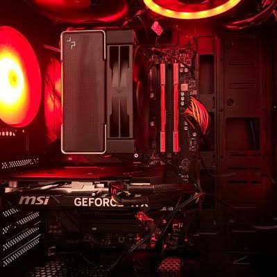

Engineer & Sales Representative at 5H1H0

Japanituremod制作者、MJaS管理者、MTRJapanUsers創設者のwarudoraです。
5H1H0ブランドのエンジニア 兼 販売担当として、クリエイティブな活動とコミュニティ運営を両立。
MinecraftのMod開発や便利なシステムの構築などを通じ、新しい体験を届けることを目標にしています。
国内最大級のMTRMod非公式日本コミュニティ。Discordでの情報交換やアドオン支援をリードしています。
MTRModを使用したMTRJapanUsers公式の日本最大級のMinecraftサーバー。MTRを軸とした鉄道・建築の場を提供。
所属ブランドの公式サイト。エンジニアとして構築を、販売担当としてプロダクト管理を行っています。
高品質な駅名標をデザインできるツール。Googleドライブからexeファイルをダウンロードして使用可能です。
日本の家具や家電を追加し、現代建築を彩るMod。幅広い建築が可能になることを目指しています。
リソースパックの煩雑なjson作成を自動化。クリエイターの工数削減を目的としたWebシステムです。